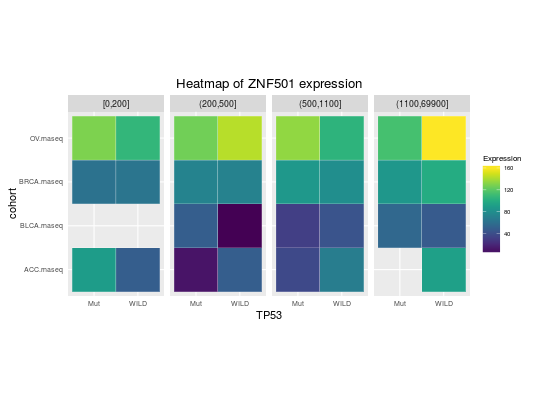

Create Heatmaps for TCGA Datasets
Usage
heatmapTCGA(data, x, y, fill, legend.title = "Expression", legend = "right", title = "Heatmap of expression", facet.names = NULL, tile.size = 0.1, tile.color = "white", ...)
Arguments
- data
- A data.frame from TCGA study containing variables to be plotted.
- x, y
- A character name of variable containing groups.
- fill
- A character names of fill variable.
- legend.title
- A character with legend's title.
- legend
- A character specifying legend position. Allowed values are one of c("top", "bottom", "left", "right", "none"). Default is "top" side position. to remove the legend use legend = "none".
- title
- A character with plot title.
- facet.names
- A character of length maximum 2 containing names of variables to produce facets. See examples.
- tile.size, tile.color
- A size and color passed to geom_tile.
- ...
- Further arguments passed to geom_tile.
Description
Function creates heatmaps (geom_tile) for TCGA Datasets.
Note
heatmapTCGA uses scale_fill_viridis from viridis package which is a port of the new
matplotlib color maps (viridis - the default -, magma, plasma and inferno) to R.
matplotlib http://matplotlib.org/ is a popular plotting library for python.
These color maps are designed in such a way that they will analytically be perfectly perceptually-uniform,
both in regular form and also when converted to black-and-white.
They are also designed to be perceived by readers with the most common form of color blindness.
Issues
If you have any problems, issues or think that something is missing or is not clear please post an issue on https://github.com/RTCGA/RTCGA/issues.
Examples
library(RTCGA.rnaseq) # perfrom plot library(dplyr) expressionsTCGA(ACC.rnaseq, BLCA.rnaseq, BRCA.rnaseq, OV.rnaseq, extract.cols = c("MET|4233", "ZNF500|26048", "ZNF501|115560")) %>% rename(cohort = dataset, MET = `MET|4233`) %>% #cancer samples filter(substr(bcr_patient_barcode, 14, 15) == "01") %>% mutate(MET = cut(MET, round(quantile(MET, probs = seq(0,1,0.25)), -2), include.lowest = TRUE, dig.lab = 5)) -> ACC_BLCA_BRCA_OV.rnaseq ACC_BLCA_BRCA_OV.rnaseq %>% select(-bcr_patient_barcode) %>% group_by(cohort, MET) %>% summarise_each(funs(median)) %>% mutate(ZNF500 = round(`ZNF500|26048`), ZNF501 = round(`ZNF501|115560`)) -> ACC_BLCA_BRCA_OV.rnaseq.medians heatmapTCGA(ACC_BLCA_BRCA_OV.rnaseq.medians, "cohort", "MET", "ZNF500", title = "Heatmap of ZNF500 expression")
## facet example library(RTCGA.mutations) library(dplyr) mutationsTCGA(BRCA.mutations, OV.mutations, ACC.mutations, BLCA.mutations) %>% filter(Hugo_Symbol == 'TP53') %>% filter(substr(bcr_patient_barcode, 14, 15) == "01") %>% # cancer tissue mutate(bcr_patient_barcode = substr(bcr_patient_barcode, 1, 12)) -> ACC_BLCA_BRCA_OV.mutations mutationsTCGA(BRCA.mutations, OV.mutations, ACC.mutations, BLCA.mutations) -> ACC_BLCA_BRCA_OV.mutations_all ACC_BLCA_BRCA_OV.rnaseq %>% mutate(bcr_patient_barcode = substr(bcr_patient_barcode, 1, 15)) %>% filter(bcr_patient_barcode %in% substr(ACC_BLCA_BRCA_OV.mutations_all$bcr_patient_barcode, 1, 15)) %>% # took patients for which we had any mutation information # so avoided patients without any information about mutations mutate(bcr_patient_barcode = substr(bcr_patient_barcode, 1, 12)) %>% # strin_length(ACC_BLCA_BRCA_OV.mutations$bcr_patient_barcode) == 12 left_join(ACC_BLCA_BRCA_OV.mutations, by = "bcr_patient_barcode") %>% #joined only with tumor patients mutate(TP53 = ifelse(!is.na(Variant_Classification), "Mut", "WILD")) %>% select(-bcr_patient_barcode, -Variant_Classification, -dataset, -Hugo_Symbol) %>% group_by(cohort, MET, TP53) %>% summarise_each(funs(median)) %>% mutate(ZNF501 = round(`ZNF501|115560`)) -> ACC_BLCA_BRCA_OV.rnaseq_TP53mutations_ZNF501medians heatmapTCGA(ACC_BLCA_BRCA_OV.rnaseq_TP53mutations_ZNF501medians, "cohort", "MET", fill = "ZNF501", facet.names = "TP53", title = "Heatmap of ZNF501 expression")
heatmapTCGA(ACC_BLCA_BRCA_OV.rnaseq_TP53mutations_ZNF501medians, "TP53", "MET", fill = "ZNF501", facet.names = "cohort", title = "Heatmap of ZNF501 expression")
heatmapTCGA(ACC_BLCA_BRCA_OV.rnaseq_TP53mutations_ZNF501medians, "TP53", "cohort", fill = "ZNF501", facet.names = "MET", title = "Heatmap of ZNF501 expression")


See also
RTCGA website http://rtcga.github.io/RTCGA/Visualizations.html. Other RTCGA:RTCGA-package,
boxplotTCGA, checkTCGA,
convertTCGA, datasetsTCGA,
downloadTCGA,
expressionsTCGA, infoTCGA,
installTCGA, kmTCGA,
mutationsTCGA, pcaTCGA,
readTCGA, survivalTCGA,
theme_RTCGA